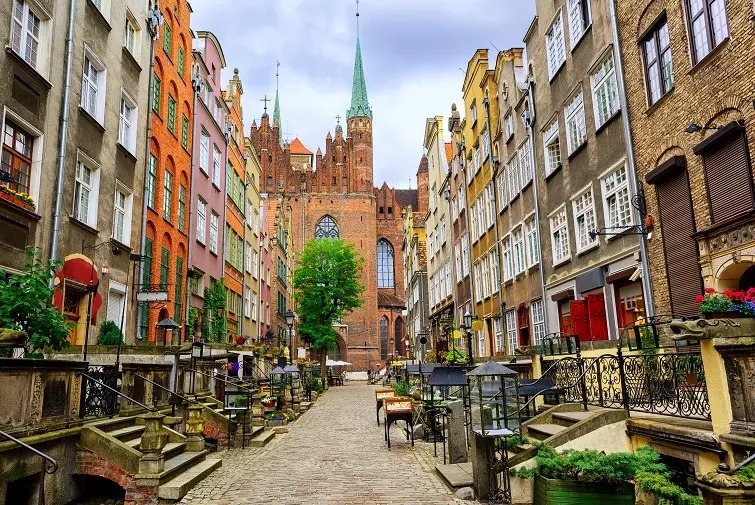

The First Gdańsk Logic Conference
May 5-7, 2023
University of Gdańsk
The Institute of Mathematics of Polish Academy of Sciences

Mostowski Lecture
The invited speakers
Piotr Borodulin-Nadzieja (University of Wrocław)
David Chodounský (IM of Czech Academy of Sciences)
Vera Fischer (University of Vienna)
Leszek Kolodziejczyk (University of Warsaw)
Maciej Malicki (IMPAN)
Sandra Müller (Technical University of Vienna)
Assaf Rinot (Bar-Ilan University)
Luca Motto Ros (University of Turin)
Ralf Schindler (University of Münster)
Jouko Väänänen (University of Helsinki)
Philip Welch (University of Bristol)
Piotr Zakrzewski (University of Warsaw)
Szymon Żeberski (Wrocław University of Science and Technology)
The schedule
Friday
9:15-9:30 Opening
9:30-10:30 Sandra Müller
10:30-10:45 Coffee break (short)
10:45-11:15 Piotr Zakrzewski
11:15-12:15 Jouko Väänänen
12:15-14:30 Lunch
14:30-15:30 Philip Welch
15:30-16:00 Coffee break (long)
16:00-17:00 David Chodounský
17:00-17:15 Coffee break (short)
17:15-18:15 Assaf Rinot
Saturday
9:30-10:30 Luca Motto Ros
10:30-10:45 Coffee break (short)
10:45-11:15 Piotr Borodulin-Nadzieja
11:15-12:15 Leszek Kolodziejczyk
12:15-14:30 Lunch
14:30-15:30 Vera Fischer
15:30-16:15 Coffee break (long) + Poster Session
16:15-17:15 John Steel (Mostowski Lecture)
Sunday
9:30-10:30 Maciej Malicki
10:30-10:45 Coffee break (short)
10:45-11:15 Szymon Żeberski
11:15-12:15 Ralf Schindler
The conference venue
University of Gdańsk, which is located here.
The room where the lectures will take place is the Main Lecture Hall of the Main Library of the University of Gdansk. It is located here.
Registration
If you are planning on attending the conference, please register here (there is no fee) here.
List of nearby hotels
Bartek's list of recommended resturants
Here are some suggestions for places to eat:
1. Chmielna by Grzegorz Labuda, a very decent restaurant with some inspirations from Polish cuisine at Wyspa Spichrzow; this would be my first choice, Chmielna
2. Fino, a fine dining place in the Main Town which I haven't visited, but which I heard is great. More formal setting than the previous one and slightly more expansive. Fino
3. Mandu, a very good pierogi place, one in Main Town, one in Oliwa, Mandu
4. Mantra, Indian restaurant in Przymorze. It's location is not very presentable, but it's really good. An interesting option for a lunch Mantra
5. Ryz, a Thai-inspired place in Oliwa. Good, but rather small. Maybe better for lunch.
6. Haos, a general-asian place in the Main Town. I've never been there, but the original one, located in Gdynia, was recommended to me a number of times Haos
7. Xo Thai in Dolny Wrzeszcz. A Thai place. In my opinion it is really good. Unfortunately, it is too small (and perhaps a bit too informal) for a dinner, but possibly a great fit for Sunday lunch.
8. Hora de Espana in the Old Town, but unfortunately also near the main street, Spanish food. Great opinions, but I haven't been there (I'd have to check if it has enough space) Hora
9. Gambas in the Old Town, near the main station, latin seafood with great opinions Gambas
10. Avocado Vegan Bistro in Wrzeszcz and Pestka Avocado in he Old Town. Two vegan places with really good food .Pretty informal and rather too small for a dinner. Most of other places should have a decent range of vegetarian options. Avocado
11. There are also places to eat across the street from the University, where the business buildings are. Also, Prosto in Sopot's train station is very good.
Sponsors
NCN, InvestGDA, IMPAN, UG, Institute of Philosophy of UG, Institute of Mathematics of UG
Local organizers
Rafał Filipów, Adam Kwela, Bartosz Wcisło and Grigor Sargsyan